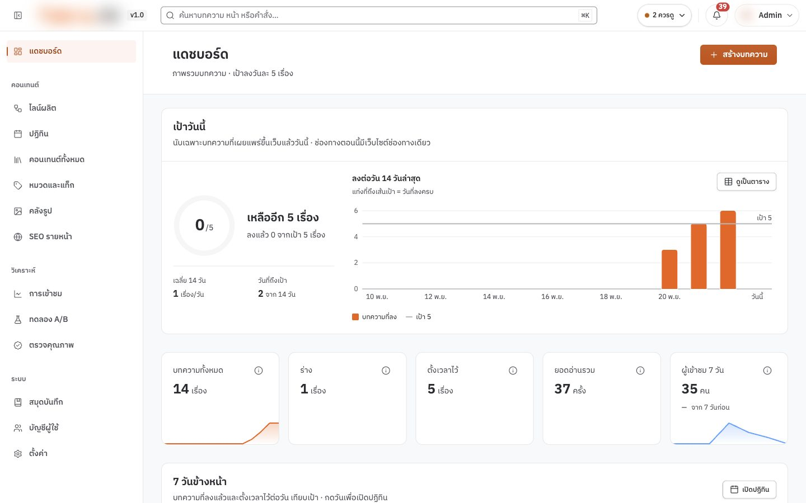
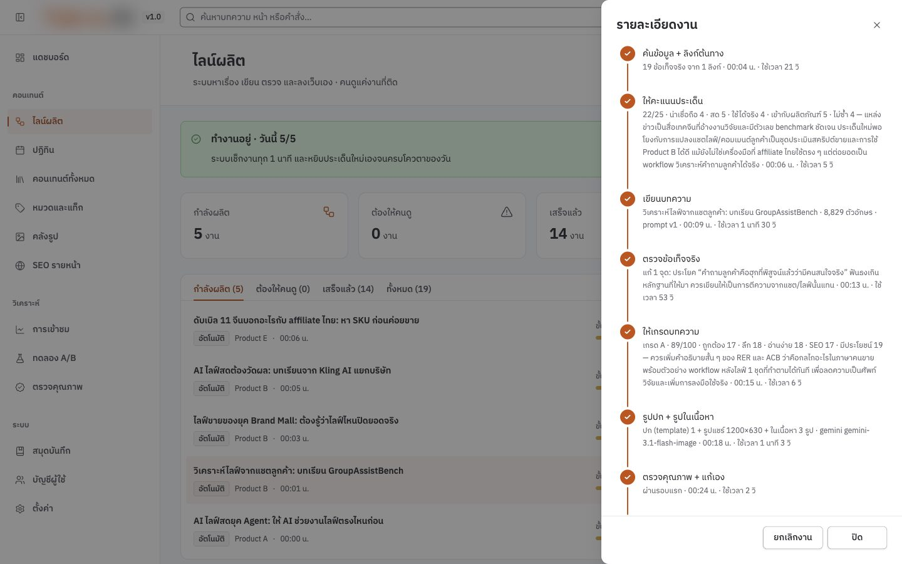
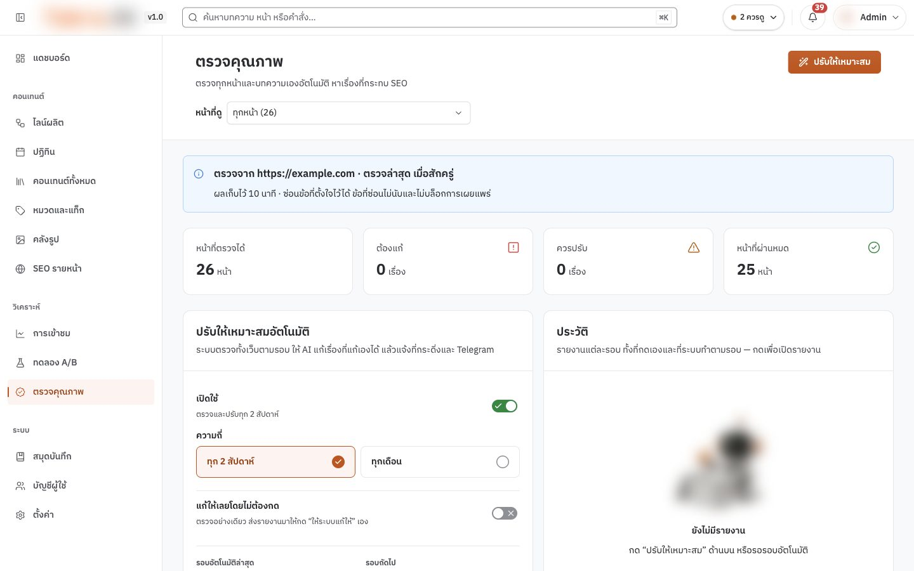
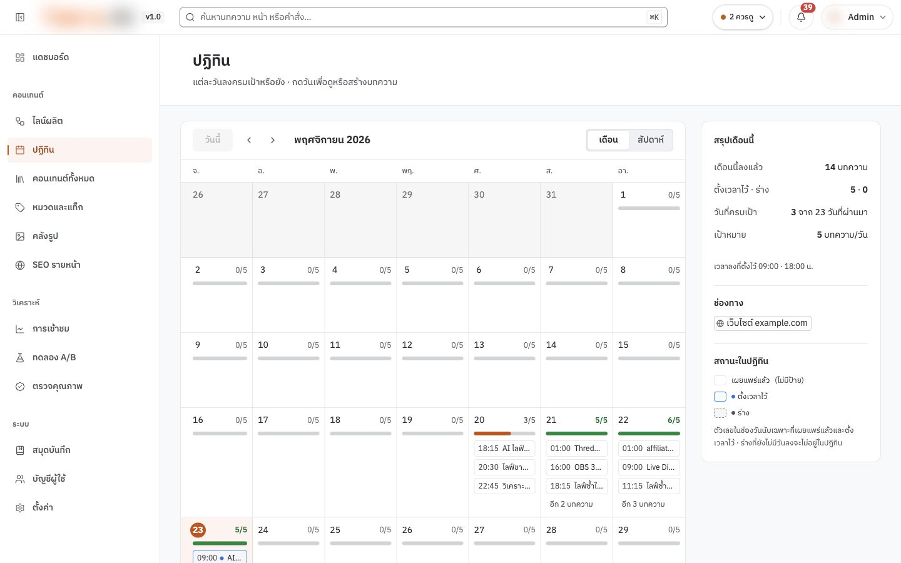

เว็บต้องมีเนื้อหาใหม่ทุกวัน แต่ไม่มีคนเขียน
เว็บการตลาดของแพลตฟอร์มไลฟ์คอมเมิร์ซมีหน้าสินค้าครบแล้ว แต่จะขึ้นผลค้นหาได้ต้องมีบทความที่ตอบคำถามคนขายของออนไลน์อย่างสม่ำเสมอ ทีมไม่มีคนเขียนเต็มเวลา และบทความที่ AI เขียนล้วน ๆ มักเป็นแบบที่ไม่มีใครอยากอ่าน
อยากได้บทความวันละ 5 เรื่องที่เชื่อถือได้ มีแหล่งอ้างอิง มีรูปของตัวเอง ลงตามเวลา และแชร์แล้วขึ้นพรีวิวสวย ถ้ามีอะไรพังให้บอกผมใน Telegram เพราะผมไม่ได้เปิดหลังบ้านดูทุกวัน
AI แต่งข้อมูลเองได้
บทความเรื่องตลาดและเครื่องมือขายของต้องมีตัวเลขและชื่อบริษัทจริง ถ้า AI เดาขึ้นมาเอง แบรนด์จะเสียความน่าเชื่อถือ
ค่า AI บานถ้าไม่มีด่าน
รูปปกกับรูปในเนื้อหาแพงกว่าข้อความหลายเท่า ถ้าทำรูปให้บทความที่สุดท้ายลงไม่ได้ ก็เท่ากับทิ้งเงิน
ระบบพังเงียบ ๆ ไม่มีใครรู้
คีย์ AI เครดิตหมด แหล่งข่าวเปลี่ยนหน้าเว็บ งานค้างกลางทาง — ถ้าแจ้งแค่เป็นไอคอนในหลังบ้าน ก็ไม่มีใครเห็นจนบทความหายไปหลายวัน
เว็บเป็น SPA แต่บอตไม่รัน JS
หน้าเว็บ prerender ตอน build เท่านั้น บทความที่ลงทีหลังจะได้ HTML ของหน้ารวม ทั้ง Google ทั้งบอตพรีวิวของ LINE/Facebook จะเห็นหน้าผิด
หลังบ้าน 1 ตัว ตัวตั้งเวลา 1 ตัว ช่องแจ้งเตือน 1 ช่อง
ไม่แยก service เพิ่ม — ไลน์ผลิตกับตัวตรวจสุขภาพรันอยู่ใน API ตัวเดิม เก็บสถานะงานไว้ในตาราง Postgres ทีละขั้น ถ้า pod ดับกลางทาง งานก็เดินต่อจากขั้นเดิม

10 ขั้น จากประเด็นข่าว ถึงบทความบนเว็บ
ตัวตั้งเวลาเดินงานทีละขั้นทุกนาที แต่ละขั้นบันทึกผล เวลา และเหตุผลไว้ให้คนย้อนดูได้ — ขั้นที่มีด่านจะหยุดงานไว้ให้คนตัดสิน แทนที่จะปล่อยของไม่ผ่านขึ้นเว็บ
- หาเรื่อง
- 1 เลือกประเด็นจากแหล่งข่าว 25 แหล่ง + ไอเดียที่ทีมส่งเข้า Inbox
- 2 ค้นข้อมูลดึงเนื้อหาจริงพร้อมลิงก์ต้นทาง
- 3 ให้คะแนนประเด็น5 แกน × 5 = 25 · ต่ำกว่า 16 ทิ้ง
- เขียน
- 4 เขียนบทความตาม Master Prompt 12 ชุดที่แก้ได้จากหลังบ้าน
- 5 ตรวจข้อเท็จจริงเทียบทุกตัวเลข/ชื่อกับแหล่ง แก้ประโยคที่เกินหลักฐาน
- 6 ให้เกรด A–D5 แกน × 20 = 100 · A ≥ 85 ลงเอง · ต่ำกว่า = รอคนดู
- ทำรูป + ตรวจ
- 7 รูปปก + รูปในเนื้อหาภาพถ่าย + แม่แบบหัวข้อ · รูปแชร์ 2400×1260
- 8 ตรวจคุณภาพ + แก้เองชื่อ/คำอธิบายบน Google, alt รูป, ลิงก์ภายใน
- ลง
- 9 ตั้งเวลาลงกระจายเท่า ๆ กันในช่วง 09:00–18:00
- 10 ขึ้นเว็บแจ้ง Telegram + แปลเป็นภาษาอังกฤษต่อ
ขั้นที่มีด่าน — ไม่ผ่าน = หยุดงานไว้ในแท็บ “ต้องให้คนดู” ไม่ลงเอง

ให้เกรดก่อนทำรูป และลงเองเฉพาะเกรด A
AI อีกตัวเป็นคนให้เกรดด้วยเกณฑ์ที่ตายตัว แยก 5 แกน แกนละ 20 คะแนน — ถูกต้อง · ลึก · อ่านง่าย · SEO · มีประโยชน์ แล้วเก็บคะแนนไว้กับบทความ
| เกรด | คะแนน | ระบบทำอะไร |
|---|---|---|
| A ลงเอง | 85–100 | ทำรูป ตั้งเวลา ลงเว็บ แจ้ง Telegram |
| B | 70–84 | เก็บเป็นร่างในแท็บ “ต้องให้คนดู” พร้อมสิ่งที่ควรแก้ — คนกดลงเองได้ |
| C / D | < 70 | เหมือน B และใช้เป็นสัญญาณว่า prompt หรือแหล่งข่าวมีปัญหา |
- สลับลำดับให้เกรดมาก่อนทำรูป — เดิมทำรูปก่อนแล้วค่อยตรวจ บทความที่ตกเกรดเลยเสียค่ารูปไปฟรี ย้ายด่านขึ้นมาก่อน ค่ารูปจ่ายเฉพาะบทความที่จะลงจริง
- เกณฑ์เป็นค่าตั้งในหลังบ้าน ไม่ใช่ในโค้ด — เริ่มที่ 70 (B ขึ้นไป) ลงไปได้ 19 เรื่อง เป็น A 14 เรื่อง พอเจ้าของระบบขอ “A เท่านั้น” ก็เปลี่ยนเป็น 85 ได้ทันทีโดยไม่ต้อง deploy คำแปลภาษาอังกฤษใช้เกณฑ์เดียวกัน
- ปกเป็นภาพถ่าย + แม่แบบ ไม่ใช่ภาพ AI ล้วน — AI เลือกฉากและเขียนหัวข้อ 2 บรรทัด แต่ตัวหนังสือวางด้วยแม่แบบของเราเอง ตัวอักษรไทยไม่เพี้ยน และจำฉาก 8 ฉากล่าสุดไว้ไม่ให้ปกซ้ำกัน
ตรวจตัวเองทุก 5 นาที เจอปัญหาส่ง Telegram
ไอคอนในหลังบ้านไม่มีใครเห็น — ระบบตรวจ 11 เรื่องทุก 5 นาที เรื่องที่ต้องให้คนแก้จะส่งเข้า Telegram พร้อม “แก้ยังไง” และ “ระบบทำอะไรให้แล้ว” ในข้อความเดียว
แยกชนิดความพัง
401/403 = คีย์ผิด · 402 หรือคำว่า quota/billing = เครดิตหมด · อย่างอื่น = ล่มชั่วคราว — สองแบบแรกลองใหม่กี่ครั้งก็ไม่หาย จึงสลับเจ้าทันทีแทนการวนเผาเงิน
ส่งเมื่อสถานะเปลี่ยน ไม่ส่งทุกรอบ
จำ “ลายเซ็น” ของปัญหาที่ส่งไปแล้วไว้ในฐานข้อมูล — ส่งตอนเกิดใหม่ ตอนหนักขึ้น ตอนกลับมาปกติ และเตือนซ้ำทุก 6 ชั่วโมงถ้ายังไม่แก้ รีสตาร์ตแล้วไม่ส่งซ้ำ
ข่าวคอนเทนต์มาจาก prod ที่เดียว
uat กับ prod ใช้บอทกลุ่มเดียวกัน ทีมเลยได้ “ลงบทความแล้ว” ซ้อนสองชุด — ใช้สวิตช์ปิดไลน์ผลิตของ env ที่มีอยู่แล้วเป็นตัวตัดสิน ไม่ต้องเพิ่มค่า config ใหม่
สรุปประจำวัน
ลงไปกี่เรื่องเทียบเป้า กี่โมง หมวดอะไร และพรุ่งนี้ตั้งคิวไว้กี่เรื่อง — เลือกได้ว่าจะให้มีข้อมูลอะไรในข้อความ และดูตัวอย่างข้อความจริงก่อนเปิดใช้
ให้บอตเห็นบทความจริง ตั้งแต่นาทีที่ลง
เว็บหน้าบ้านเป็น static ที่ build ล่วงหน้า แต่บทความลงทุกวัน — ให้ API ตอบ HTML ของบทความเองเมื่อมีคนขอ path ที่ยังไม่ได้ prerender
- HTML สำหรับบอต — เอาโครงหน้าที่ build แล้วมาใส่เนื้อบทความจริง title, canonical, og, hreflang และข้อมูล JSON-LD (BlogPosting + Breadcrumb) แล้วฝากข้อมูลบทความไว้ให้ Vue หยิบไปใช้ตอน hydrate ไม่ต้องโหลดซ้ำ
- รูปแชร์ของทุกบทความ ทุกภาษา — 2400×1260 JPEG ราว 80 KB ฉบับภาษาอังกฤษได้รูปที่หัวข้อเป็นภาษาอังกฤษแยกต่างหาก ตรวจกับบอตพรีวิวครบ 28/28 หน้า
- สองภาษาแบบ index ได้จริง — sitemap แยกรายภาษาใต้ sitemap index, hreflang th/en/x-default, llms.txt สำหรับ AI search และแปลบทความเป็นภาษาอังกฤษอัตโนมัติผ่านด่านเกรดเดียวกับฉบับไทย
- ตรวจคุณภาพทั้งเว็บ + “ปรับให้เหมาะสม” — ตรวจ 26 หน้าฟรีไม่เรียก AI แยกว่าเรื่องไหน AI แก้เองได้ (ชื่อ/คำอธิบาย/alt/ลิงก์ภายใน) เรื่องไหนต้องแก้โค้ด ตั้งรอบทุก 2 สัปดาห์แบบ “ตรวจอย่างเดียว รอคนกดยืนยัน” จนกว่าจะเชื่อผลของมัน

ปัญหาที่ไม่เห็นในเครื่องตัวเอง
ส่วนใหญ่โผล่ตอนขึ้น Kubernetes จริง ที่มีหลาย pod และ timezone คนละแบบกับเครื่อง dev
ตั้งให้ลง 09:00–18:00 แต่บทความขึ้นตอน 16:00–01:00
โค้ดคิดเวลาด้วย local time ทั้งระบบ (ช่องเวลาลง เริ่มวัน ชั่วโมงส่งสรุป) บนเครื่อง dev เป็นเวลาไทยเลยไม่มีอะไรผิด แต่ container รันเป็น UTC ทุกอย่างจึงเลื่อนไป 7 ชั่วโมง
TZ=Asia/Bangkok ใน image บรรทัดเดียว (Node บน Alpine ใช้ ICU ในตัว ไม่ต้องลง tzdata) แล้วย้ายเวลาบทความของวันนั้นกลับเข้าช่วงที่ถูก — เลือกแก้ที่สภาพแวดล้อมแทนการไล่แก้ทุกจุดที่คำนวณเวลา
prod มี 2 pod = ไลน์ผลิตทำงานซ้ำ ค่า AI ×2
ตัวตั้งเวลาอยู่ใน API ทุก pod จึงหยิบงานเดียวกัน และ Telegram ส่งสรุปซ้ำ ปกติจะใช้ advisory lock ของ Postgres แต่ฐานข้อมูลต่อผ่าน pgbouncer แบบ transaction pooling lock ระดับ session จึงเชื่อไม่ได้
รูปในบทความไม่มี width/height — แต่ระบบไม่มีตารางเก็บขนาดรูป
รูปในเนื้อหาอยู่ใน markdown เป็นแค่ URL ตัวตรวจคุณภาพฟ้องว่าหน้ากระโดดตอนรูปโหลดทั้ง 14 บทความ จะเพิ่มตารางรูปและย้อนเก็บขนาดทั้งหมดก็เป็นงานใหญ่เกินเหตุ
ตัดโค้ดออก ~3,100 บรรทัด โดยหน้าเว็บต้องเหมือนเดิมทุกตัวอักษร
ระบบโตเร็วจนมีของซ้ำเต็มไปหมด: หน้าสินค้า 3 หน้าที่ template เหมือนกัน ฟอร์มเดียวกัน copy ไว้ 8 ที่ helper เดียวกันเขียนซ้ำ 4–8 ไฟล์ และ library ที่ใช้แค่จุดเดียว
<dialog>) เขียนเหตุผลไว้แล้วข้ามตัวเลขจากระบบที่เปิดใช้จริง
สิ่งที่ได้เรียนรู้
ย้ายการให้เกรดขึ้นมาก่อนการทำรูป ได้ทั้งคุณภาพและเงินคืนโดยไม่ต้องเขียนโค้ดเพิ่ม — ลำดับขั้นสำคัญพอ ๆ กับตัวขั้น
กระดิ่งในหลังบ้านมีไว้ดูย้อนหลัง แต่ตัวที่ทำให้ระบบไม่พังเงียบคือข้อความ Telegram ที่บอกทั้งปัญหา วิธีแก้ และสิ่งที่ระบบทำให้แล้ว
เกณฑ์ลงเอง และ “แก้ให้เลย” เป็นค่าตั้งที่เจ้าของระบบปรับได้เอง เริ่มแบบระวัง แล้วค่อยปล่อยเมื่อเห็นผลหลายรอบ
อ่านต่อ: เว็บการตลาดไลฟ์คอมเมิร์ซ — Vue 3 + Vite SSG ตัวเว็บหน้าบ้านที่ระบบนี้ต่อยอด